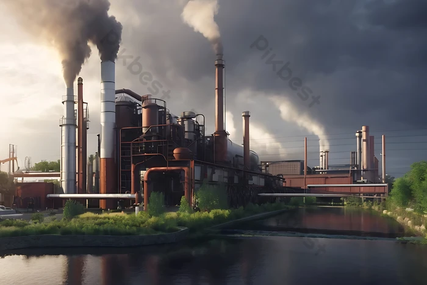

we need take care of our world because we life here and if we throw trash at outside and dont care about waht we are breathing this sad so many people are dont worry about that ,but animals are dont understend what is good for them and what bad for them many animals are dieng eat or stuck on trash and plans cant dissolve and the plans cant take somithing good from trash and trash kill the plans and pollutes nature.
Sorting waste creates value by transforming it into raw materials, products or energy. Indeed, by recycling waste, we can make new objects, such as bottles, cans, bags, clothes, furniture, toys... For example, 27 plastic bottles can be used to make a sweater. 670 aluminum cans can be used to make a bicycle.Its very good deads because you gonna hwlp not just for yourself and for other people
we need to use the electrocars and get energy from the sun this is help us dont to pollute the air and also To reduce gas emissions from a factory, you can focus on improving energy efficiency by optimizing equipment like air compressors, switching to renewable energy sources, implementing better insulation, conducting energy audits to identify peak usage, and exploring alternative materials and processes that generate less emissions during production.
